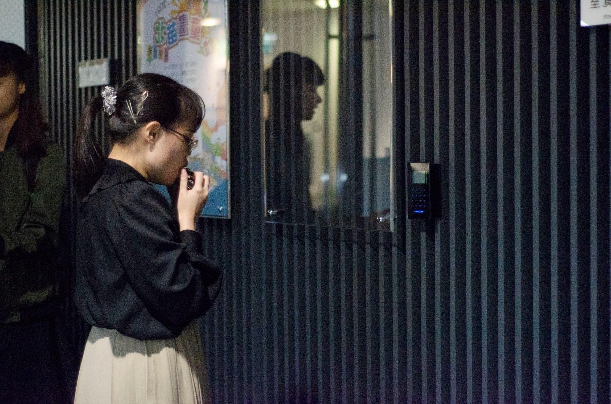

鄒思妮
Sy-Ni, Chou
目前為國立臺灣師範大學地理學系碩士生，在地理系，我對自然地理跟資訊尤其有興趣，特別是在地形、水文跟GIS應用方面。在大四畢業後，我曾進科技業工作了一年，不過我深感自己在知識上有所不足，因此又回到師大繼續專研學業。
學歷及工作經歷
口琴與社團
其他興趣
期末報告
學歷
學士｜國立臺灣師範大學 地理學系（2018.09 - 2022.06）
碩士｜國立臺灣師範大學 地理學系（2024.09 - ）
工作經歷
實習｜瑞竣科技股份有限公司（2021.07 - 2021.08）
數據整理
POI更新及校正
實習｜崧旭資訊股份有限公司（2022.01 - 2022.06 ）
地址定位整理
產製圖資
系統測試
正職｜方達科技股份有限公司 GIS助理程式設計師（2022.07 - 2023.07 ）
圖資管理及製作
產製圖資
GIS圖臺管理
系統測試
專案管理
口琴與社團
口琴是我生活的重心與心靈出口，從高中到大學我接參加口琴社，透過教學、練團與演出，除了不斷增長的熱忱與實力，我也結識了一群重要的朋友。
幹部經驗
高二｜師大附中舒馨口琴社 社長
大二｜師大口琴研究社 教學
大三｜師大口琴研究社 顧問
畢業｜師大口琴研究社 老師
獲獎紀錄
2021｜全國學生音樂比賽-口琴獨奏大專組 優等
2020｜臺灣口琴音樂大賽-半音階獨奏公開組 銅質獎
2020｜臺北市學生音樂比賽-口琴獨奏大專組 優等
2019｜全國學生音樂比賽-口琴四重奏大專組 特優
2019｜全國學生音樂比賽-口琴大合奏大專組 優等
2019｜第11屆成大盃口琴無差別格鬥大賽-四到六人小合奏組 第一名
其他興趣
我喜歡打電動，包含手遊跟桌機遊戲：
原神
崩壞：星穹鐵道
絕區零
鳴潮
潛水員戴夫
星露谷
我喜歡旅遊，前陣子也開始學習攝影
特別喜歡拍植物和小動物